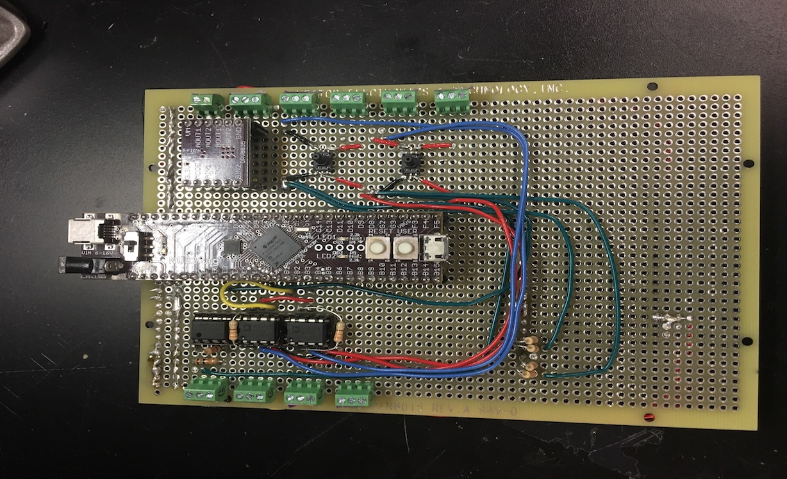
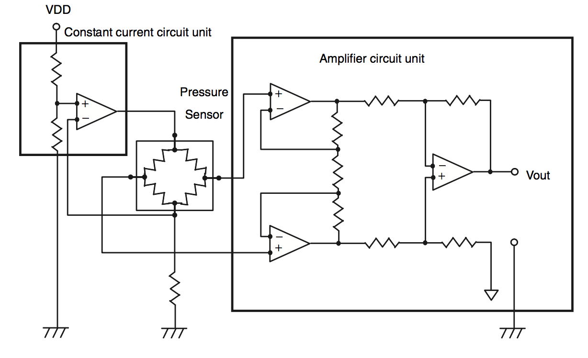

Human-Robot Haptic Interface
Overview

As part of my final project at Northwestern University, I worked with professor Mitra Hartmann in her research on rat whiskers. As the group has been studying the subject for years, they have researched and developed many interesting topics. Most notably, they have developed a mechanical rat whisker sensor which is capable of obtaining moment and force information upon contact with an object. In an effort to exploit this data, my project aims at creating a human interface for the device. Specifically, I seek to design and build a system which will give humans control over an array of rat whiskers, and accurately and intuitively relate that information back to the user in the form of haptic feedback.
The applicability of this research can scale to multiple fields. In surgical robotics, and other areas where high precision is mandatory, the use of visual feedback alone may not be enough, and haptics may prove to be the best solution. Similarly, in applications where other sensory information just isn't possible due to lack of light, or other obstructions, we may find that having the added sense of touch can make difficult operations exponentially simpler.
Prototyping
Early stage research was focused on the ability to give the user feedback which could relate back a sense of touch (both in force magnitude and position) given whisker data. In order to do this, small rings were used to apply pressure at several different locations throughout a person’s fingers. When a rat whisker comes into contact with a surface, pressurizing the correct ring will give a sense of the forces being felt in a specific location. The secondary goal was to give the user control over an array of mechanical whiskers (i.e. as the hand moves we would like the whiskers to move accordingly in real time). This allows a person to actively explore an unknown environment by using their sense of touch - potentially identifying where objects may lie, along with the force with which that object is pushing on the sensors.
The proposed idea has several key components:
- Mechanical Design
- Electrical Design
- Embedded Programming
Ring Design
In designing a ring for a person to wear, several features need to be considered. An ideal ring would have a degree of flexibility in order to fit on a variety of finger sizes, a small volume in order to allow the user to maintain full dexterity in their hand, and good functionality (i.e. the ring should have good resolution when pressurizing a finger). For this initial iteration of the project, the proposed ring design can be seen in the image below.
The ring is made by casting a silicone material using 3D printed molds. The result is a flexible piece which can be adjusted to fit on a variety of different circumferences. Notice from the image that the ring has an inner cavity. This cavity holds a balloon which changes in shape as air is pumped into it - it is this balloon which will be felt by a user. An important aspect to note is that no energy is put into expanding the material of the inner balloon, but rather only to transitioning from a state where it is flat between the user's finger and the outer ring, to one where it sits in a circular geometry squishing the finger. As such, all of the energy exerted by the pump only goes into pushing on the finger for a better effect. Adding to this is the thick outer wall of the device. This design prevents any of the expansion of the inner material from escaping outwards, and instead directs it towards the user to be felt as pressure.
As for the size of the ring, further design iterations need to be implemented. Although already small, one can imagine that as the number of rings on a person's finger grows, the overall size of each ring becomes critical, and must therefore be minimized. Overall the current design presents a first prototype with several key features taken into account. Future work into the project must continue to improve the ring until it has been better optimized.
 |
 |
Mechatronics
Currently there are several key parts to the electronics: The PIC32 microcontroller (on the NU32 breakout board), an external PWM driver, H-Bridge circuits, pressure sensors and pumps, servo motors, and smaller components like op amps and potentiometers.
- PIC32: Aside from running the main control loop and analyzing the data, which will be explained in the next section, the PIC is in charge of using I2C communication in order to speak with the external PWM driver, and the ADC in order to receive signals from sensors.
- PWM Driver: This device is necessary when a large number of whiskers are being used (as the pressure pumps and servo motors both require PWM input signals). It interacts with the PIC using I2C and includes several configurable parameters, of which the most important are frequency and duty cycle.
- H-Bridge: These circuits are in charge of driving the small pumps, for which (as with more standard motor control) a PWM signal is used and the duty cycle determines the magnitude of the pressure being exerted.
- Servo motor: Servos are used in this prototype in order to rotate the rat whisker about an axis (as shown in the video). powered by an external power supply, the servos are also controlled using PWM signals
- Pressure Sensor: In order to provide a more robust controller, pressure sensors are used as feedback for the system. The pressure sensors use a constant source current supply of 100mA, and the outputs need to be passed through a differential amplifier before being read by the ADC on the PIC. The electrical schematic on the right below shows the setup used to achieve this.
- Electric Pump:The small pumps are run by brushed DC motors. As mentioned above these are controlled by the H Bridges.
- Potentiometer: In order to track the distance that the user has rotated their hand, small potentiometers are used for this prototype (these are located in the stand that is being rotated by the person in the video).
Most of the components can be shown in the prototype board in the image below. Missing are the pumps, whiskers, servos, potentiometers, and external PWM driver, which connect to this board. Missing also is an external power supply which must be used in order to drive the motors and whiskers. The prototype board shown can support two whisker systems (as can be seen there are only two pressure sensors) although more can be added without much complexity.
|  |  |
Embedded Programming and Control
All of the software for this project can be found in this Github repo. The code, written in C, is meant to be run on the PIC32 microcontroller. The main loop works as follows. The ADC is muxed so that it reads the data coming from the potentiometers, this value is converted to the degree that the user has rotated. The value is once again converted, this time to a PWM signal in order to turn the servo motors to the correct angle. The ADC is now muxed once again in order to read data coming from the whiskers. If the whiskers have come into contact with something then there will be a difference in the voltage reading. This value is converted into a "desired pressure". A smaller feedback loop then runs using the H-bridge drivers and pressure sensors in order to increase/decrease the pressure felt at the corresponding ring accordingly. This is done for all whisker/ring pairs in order to complete one full cycle. The key in writing the code was to make it modular in order to allow for as much reusability as possible for the future, particularly in the event of changes to the approach taken. Included in the repo are also several files that are not used in the final prototype. This entails code for an IMU, external GPIO, digital potentiometer, and more, which were implemented in previous iterations but discarded as progress was made.
Conclusion
The project is only in its early stages. The video shows a first prototype for a single whisker/ring pair. Although the board can run two whiskers, and more can be added, ideally, the goal is to achieve a system closer to 15 whiskers and rings (about three per finger), in order provide a fully immersive experience. In order to accomplish this, several more design iterations will need to be tested: the rings will need to be improved, likely a customized PCB board will have to ordered, and a more intricate systems will need to be built to track user finger position and rotate the whiskers. Despite this, I believe the project is headed in a good direction, and is one that introduces a novel technology which can find several applications in the rapidly expanding field of robotics.